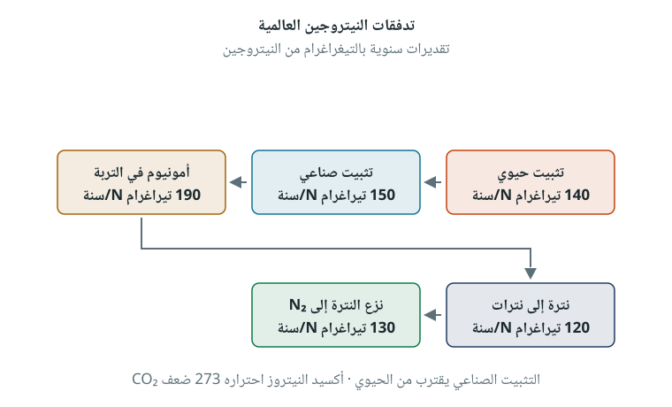

دورة النيتروجين
Nitrogen cycle
تحويل النيتروجين الجوي غير المتفاعل إلى أمونيوم ثم نترات بفعل كائنات متخصصة، ثم إعادته إلى الغلاف الجوي بنزع النترة؛ وميزانها العالمي صار نصفه صناعيًّا.
دورة النيتروجين تحوّل غاز النيتروجين الجوي غير المتفاعل إلى مركبات حيوية وترجعها إليه. النيتروجين في الغلاف الجوي على شكل N₂ برابطة ثلاثية طاقتها 941 كيلوجول/مول، فقليل من الكائنات قادر على كسرها. البكتيريا المثبّتة تفعل ذلك بإنزيم النيتروجيناز، وتغذّي سلسلة البروتين في الأحياء كلها.
المركبات الناتجة تمرّ بتحولات متتالية: أمونيوم، ثم نترات بالتأكسد الميكروبي، ثم يعود النيتروجين غازًا بنزع النترة. ما يقرب من نصف النيتروجين المفكك حاليًّا في الأجسام الحية أتاحه تصنيع الأمونيا الصناعي، فالدورة صارت مدارة جزئيًّا بيد الإنسان، بما فيها من تسرب إلى الماء والهواء.
الآلية
كيف يحدث الأمر على مستوى الجسيمات أو المتغيّرات المباشرة
الطريق الحيوي: معقد النيتروجيناز الحديدي–الموليبديني يختزل N₂ إلى NH₃ ويستهلك 16 جزيء ATP لكل جزيء، ويأخذ إلكتروناته من الفيريدوكسين، ويعمل في ظروف لا أكسجينية لأن الإنزيم يتلف بالأكسجين؛ لذلك تعيش المثبّتات في عقيدات جذرية محمية ببروتين الليغيموغلوبين. الأمونيوم يؤكسد إلى نترات على مرحلتين: أمونيوم ← نترات ببكتيريا النترتة الأولى، ثم نترات ← نترات بالنترتة الثانية. النبات يمتص النترات ويختزلها إلى أمونيوم داخل الأنسجة. أخيرًا تحوّل بكتيريا نزع النترة النترات إلى N₂ في غياب الأكسجين، فتُغلق الدورة وتعتمد على الكربون العضوي مانحًا للإلكترونات.
الأرقام والوحدات
العلاقات والوحدات والنطاقات العددية التي تسند الشرح
تركيز N₂ في الهواء 78.1% بالحجم. التثبيت الحيوي العالمي يُقدَّر بنحو 140 تيراغرام نيتروجين سنويًّا، والتصنيع الصناعي بأمونيا هابر–بوش بنحو 150 تيراغرام، فيقترب الإجمالي من 290 تيراغرام. نزع النترة يعيد نحو 130 تيراغرام إلى الغلاف الجوي. كسر رابطة N₂ يحتاج 941 كيلوجول/مول، ويستهلك النيتروجيناز 16 ATP لكل جزيء نيتروجين أي 5.3 جزيء ATP لكل إلكترون. وأكسيد النيتروز الناتج عرضًا له احترار 273 مرة قدر ثاني أكسيد الكربون في مئة سنة.
الفرق الدقيق
المفهوم الملتبس الذي يُخلَط به، وأين ينفصلان
الخلط الأول: دورة النيتروجين ليست دورة النترات؛ للأخيرة مسار داخلي في التربة، أما الأولى فتشمل الغلاف الجوي والكائنات والصخور. الثاني: التثبيت ليس النترتة؛ الأول اختزال N₂ إلى أمونيوم، والثاني أكسدة الأمونيوم إلى نترات. الثالث: الأمونيوم ليس نترات؛ الفرق يحدد الشحنة والتوافر: الأمونيوم موجب ويُثبَّت على المعادن الطينية، والنترات سالبة سريعة الحركة وتُغسل بالماء. الرابع: نزع النترة ليس تحلّلًا؛ هو اختزال مرتبط بالتنفس في غياب الأكسجين ويحتاج مانح إلكترونات عضويًّا.
حدود التعريف
أين ينكسر التعريف أو النموذج وما الذي لا يفسّره
الأرقام ميزان عالمي تقديري لا حساب دقيق: تفاوت تقديرات التثبيت الحيوي يبلغ نحو ±30% لاختلاف طرق القياس والتحويل. الميزان لا يحدد توزيعًا مكانيًّا، فالتثبيت يتكدّس في الأراضي الرطبة والزراعة البقولية. معامل احترار أكسيد النيتروز يعتمد أفقًا زمنيًّا: يبلغ 273 في مئة سنة وينخفض في أفق أطول. والتدفقات التربوية صغيرة ومتغيرة موسميًّا، فلا تلتقطها المسوح السنوية، ويبقى الفاقد من الأسمدة بؤرة عدم يقين في كل ميزان إقليمي.

| الكمية | القيمة | المصدر |
|---|---|---|
| نصيب النيتروجين من الهواء بالحجم | 78.1 % | [2] |
| التثبيت الحيوي العالمي سنويًّا | 140 تيراغرام نيتروجين | [1] |
| التثبيت الصناعي بأمونيا هابر–بوش سنويًّا | 150 تيراغرام نيتروجين | [1] |
| طاقة كسر رابطة النيتروجين الثلاثية | 941 كيلوجول/مول | [2] |
| معامل احترار أكسيد النيتروز في مئة سنة | 273 ضعف ثاني أكسيد الكربون | [1] |
المصادر
- 1 Biology 2e — 46.3 Biogeochemical Cycles — OpenStax. openstax.org/books/biology-2e/pages/46-3-biogeochemical-cycles · اطُّلع عليه 2026-11-16
- 2 Nitrogen and Water — U.S. Geological Survey — Water Science School. www.usgs.gov/special-topics/water-science-school/science/nitrogen-and-water · اطُّلع عليه 2026-11-16
استشهد بهذا المصطلح
الصيغتان مبنيتان من بيانات الصفحة نفسها: العنوان والتاريخ ورابط النسخة المنشورة.
دورة النيتروجين — Nitrogen cycle. (2026). ديوان المعرفة — انفراد. https://infiradev.com/diwan/terms/nitrogen-cycle.html
@misc{nitrogen-cycle2026,
title = {دورة النيتروجين},
titleaddon = {Nitrogen cycle},
howpublished = {{ديوان المعرفة — انفراد} — مرجع علمي عربي},
year = {2026},
url = {https://infiradev.com/diwan/terms/nitrogen-cycle.html},
urldate = {2026-11-16},
note = {مراجعة علمية: مراجعة آلية — ديوان المعرفة (روابط المصادر + عقد المحتوى + وجود الرسم) 2026-11-16}
}
راجعه: مراجعة آلية — ديوان المعرفة (روابط المصادر + عقد المحتوى + وجود الرسم) 2026-11-16 · 2026-11-16 · آخر تحديث 2026-11-16